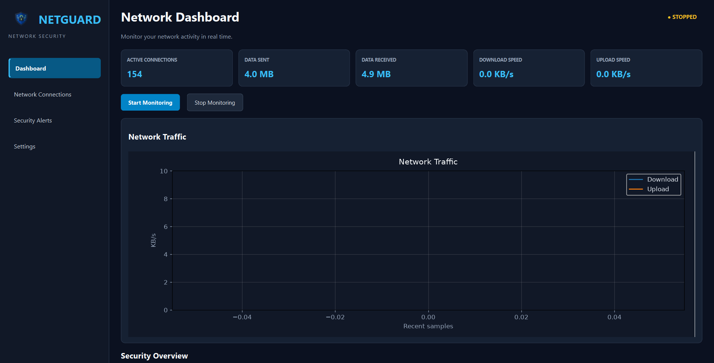
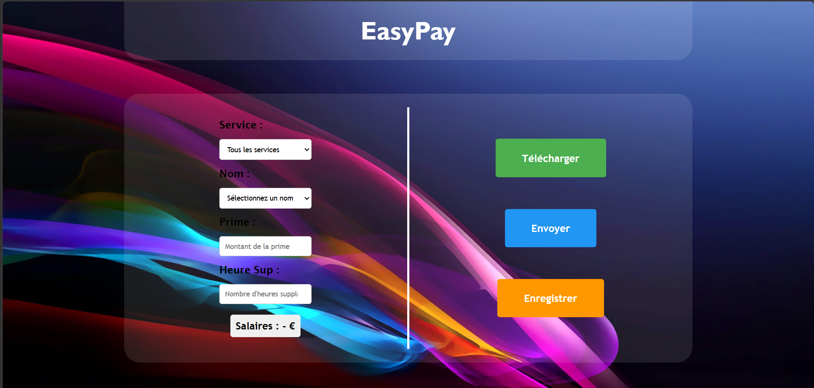
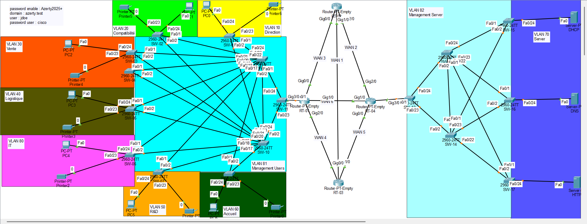
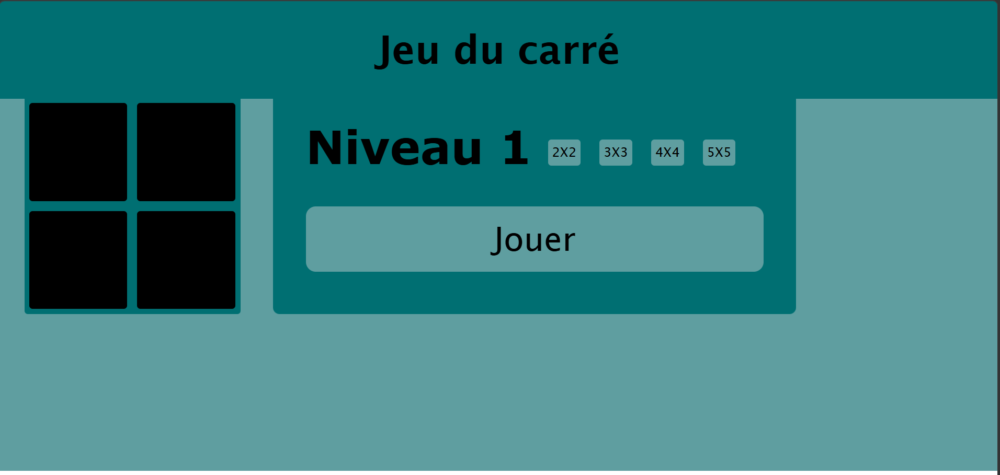

Infrastructure réseau
Découverte des réseaux informatiques et compréhension du fonctionnement des infrastructures.
Bonjour, je suis
Recherche d'alternance en systèmes & réseaux
}Étudiant en Bachelor Réseaux, Cloud et Cybersécurité, je recherche une alternance pour développer mes compétences en administration systèmes, réseaux et virtualisation. Je souhaite participer à des projets concrets et progresser au sein d'une équipe informatique.
01 — Présentation
Étudiant en Bachelor Réseaux, Cloud et Cybersécurité, je m'intéresse à la conception, à l'administration et à la sécurisation des infrastructures informatiques.
Je développe mes compétences sur Windows Server, Linux, les environnements virtualisés avec VMware et Hyper-V, ainsi que les fondamentaux des réseaux informatiques. J'utilise également Git et GitHub pour organiser et présenter mes projets.
Je recherche une alternance qui me permettra de participer à des missions concrètes, d'approfondir mes connaissances techniques et de progresser dans les domaines des systèmes, des réseaux et du Cloud.
Découverte des réseaux informatiques et compréhension du fonctionnement des infrastructures.
Windows Server, Linux, virtualisation et environnements de test.
02 — Savoir-faire
Les technologies, outils et environnements que je pratique ou que j'approfondis dans le cadre de ma formation et de mes projets.
À adapter selon les technologies et notions que tu maîtrises réellement.
03 — Réalisations
Quelques réalisations illustrant mes compétences techniques et ma progression.

Réseaux · Python
Application développée en Python pour observer les connexions réseau d'un ordinateur et visualiser certaines informations liées à son activité réseau.

Python - Django
Site web développé en Python avec le framework Django, permettant de gérer la paye des employés.

Systèmes et réseaux
Conception et mise en place d'une infrastructure réseau complète, incluant la configuration des routeurs, des switchs et des serveurs.

Développement web
Un jeu où il faut retenir une séquence de carrés qui s'allument un par un.
04 — Expérience
Oct 2025 -
Sup de Vinci
Formation orientée vers les infrastructures informatiques, les systèmes, les réseaux, le Cloud et la cybersécurité. Développement progressif de compétences techniques à travers les enseignements et les projets pratiques.
Sept 2022 - Juil 2025
Lycée Paul Langevin
Consulte mon CV pour découvrir mon parcours complet.
05 — Mes liens
Mes projets, mon parcours et mes profils professionnels sont accessibles ici.
Mes projets, mes dépôts et mon code source.
EXPLORER MES PROJETSMon profil professionnel et mon parcours.
VOIR MON PROFILPour les opportunités professionnelles et les échanges.
M'ÉCRIREMon parcours, mes compétences et mes formations dans un document PDF.
TÉLÉCHARGER MON CV